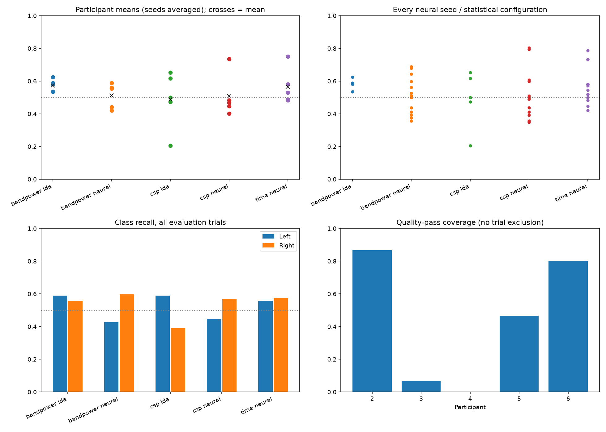
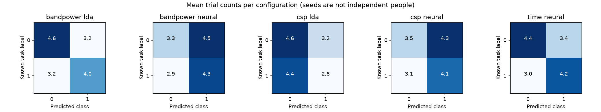
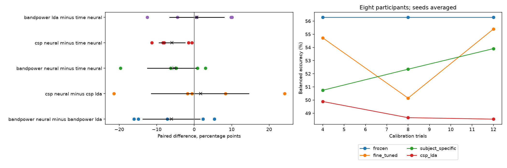
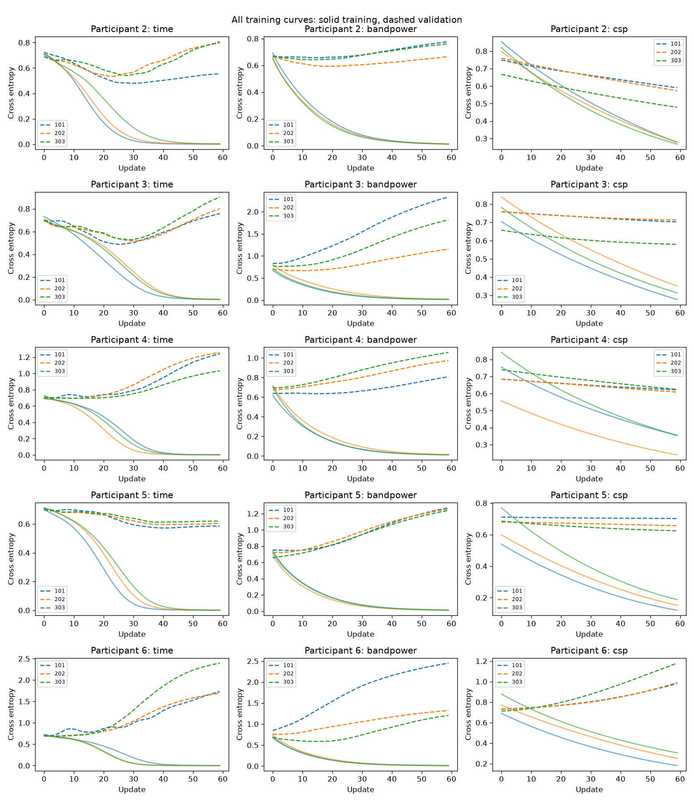
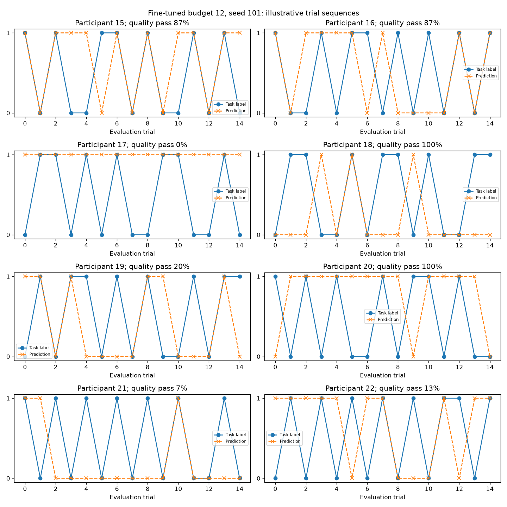

Saved decoders reproduce their predictions. Established EEG features did not improve the tested neural networks on average. The evidence does not establish a confirmed winner.
These experiments classify left/right imagined-fist task labels from recorded human EEG. They do not establish continuous rest detection, live mind reading, neural mapping, or reliable human control of the duck. Synthetic neural-signal robot replay remains a separate working demonstration.
Five previously studied people (2–6): run 4 training, run 8 validation, run 12 evaluation. Same trials for every method; all quality flags are reported without exclusion. Neural seeds 101/202/303, 60 full-batch Adam updates, minimum validation loss checkpoint. All subjects 1–22 have been inspected previously.
Windows begin 1 second after annotation and last 2 seconds at 160 Hz; causal 8–30 Hz filtering and average reference. Features use volts, Welch 1-second segments and integrated V² before logarithm. Band edges reproduce the historical implementation exactly (upper edge excluded). CSP and normalization are fitted on run 4 only. Saved normalization is independently checked against that training run.
| Decoder | Mean balanced accuracy | Configurations | Neural / LDA decision parameters | Historical train/save/check seconds | Model+normalization batch ms | Features+model batch ms | Source-through-prediction batch ms |
|---|---|---|---|---|---|---|---|
| bandpower lda | 57.32% | 5 | 193 | Not recorded | 0.234 | 8.298 | 106.236 |
| bandpower neural | 51.25% | 15 | 6242 | 0.061 | 0.082 | 8.226 | 105.482 |
| csp lda | 48.93% | 5 | 7 | Not recorded | 0.216 | 1.532 | 98.819 |
| csp neural | 50.65% | 15 | 290 | 0.064 | 0.071 | 1.417 | 98.321 |
| time neural | 56.61% | 15 | 27970 | 1.508 | 8.474 | 8.552 | 105.714 |
Historical neural seconds include training, validation, checkpoint saving and reload checking. LDA parameter counts include decision coefficients and intercept only, excluding fitted scaler/CSP arrays. Statistical training times were not recorded and cannot be recovered without retraining. Seeds are not independent participants.


Retrospective participant bootstrap: seeds averaged within each person, 10,000 resamples, random seed 712. Intervals are exploratory and unstable with five people, are not corrected for multiple comparisons, and do not validate population generalization.
| Comparison | Budget | Mean difference (pp) | 95% bootstrap interval (pp) | Participant differences (pp) |
|---|---|---|---|---|
| bandpower neural minus bandpower lda | — | -6.07 | [-13.81, 1.67] | 2: -7.14, 3: -16.07, 4: +2.38, 5: +5.36, 6: -14.88 |
| csp neural minus csp lda | — | 1.73 | [-11.55, 14.64] | 2: +8.33, 3: -21.43, 4: +24.11, 5: -0.60, 6: -1.79 |
| bandpower neural minus time neural | — | -5.36 | [-12.56, 0.71] | 2: -19.64, 3: -6.25, 4: +2.98, 5: +0.89, 6: -4.76 |
| csp neural minus time neural | — | -5.95 | [-9.46, -2.32] | 2: -1.49, 3: -8.04, 4: -8.33, 5: -11.31, 6: -0.60 |
| bandpower lda minus time neural | — | 0.71 | [-6.67, 8.10] | 2: -12.50, 3: +9.82, 4: +0.60, 5: -4.46, 6: +10.12 |


| Participant | Decoder | Seed-mean BA | Individual seed BA | Quality pass | Trials |
|---|---|---|---|---|---|
| 2 | bandpower lda | 62.50% | 0: 62.50% | 86.67% | 15 |
| 2 | bandpower neural | 55.36% | 101: 41.07%, 202: 56.25%, 303: 68.75% | 86.67% | 15 |
| 2 | csp lda | 65.18% | 0: 65.18% | 86.67% | 15 |
| 2 | csp neural | 73.51% | 101: 80.36%, 202: 60.71%, 303: 79.46% | 86.67% | 15 |
| 2 | time neural | 75.00% | 101: 78.57%, 202: 73.21%, 303: 73.21% | 86.67% | 15 |
| 3 | bandpower lda | 58.04% | 0: 58.04% | 6.67% | 15 |
| 3 | bandpower neural | 41.96% | 101: 50.89%, 202: 35.71%, 303: 39.29% | 6.67% | 15 |
| 3 | csp lda | 61.61% | 0: 61.61% | 6.67% | 15 |
| 3 | csp neural | 40.18% | 101: 49.11%, 202: 35.71%, 303: 35.71% | 6.67% | 15 |
| 3 | time neural | 48.21% | 101: 54.46%, 202: 48.21%, 303: 41.96% | 6.67% | 15 |
| 4 | bandpower lda | 53.57% | 0: 53.57% | 0.00% | 15 |
| 4 | bandpower neural | 55.95% | 101: 67.86%, 202: 50.00%, 303: 50.00% | 0.00% | 15 |
| 4 | csp lda | 20.54% | 0: 20.54% | 0.00% | 15 |
| 4 | csp neural | 44.64% | 101: 49.11%, 202: 50.00%, 303: 34.82% | 0.00% | 15 |
| 4 | time neural | 52.98% | 101: 50.00%, 202: 51.79%, 303: 57.14% | 0.00% | 15 |
| 5 | bandpower lda | 53.57% | 0: 53.57% | 46.67% | 15 |
| 5 | bandpower neural | 58.93% | 101: 59.82%, 202: 52.68%, 303: 64.29% | 46.67% | 15 |
| 5 | csp lda | 47.32% | 0: 47.32% | 46.67% | 15 |
| 5 | csp neural | 46.73% | 101: 41.07%, 202: 59.82%, 303: 39.29% | 46.67% | 15 |
| 5 | time neural | 58.04% | 101: 58.04%, 202: 58.04%, 303: 58.04% | 46.67% | 15 |
| 6 | bandpower lda | 58.93% | 0: 58.93% | 80.00% | 15 |
| 6 | bandpower neural | 44.05% | 101: 43.75%, 202: 37.50%, 303: 50.89% | 80.00% | 15 |
| 6 | csp lda | 50.00% | 0: 50.00% | 80.00% | 15 |
| 6 | csp neural | 48.21% | 101: 43.75%, 202: 50.89%, 303: 50.00% | 80.00% | 15 |
| 6 | time neural | 48.81% | 101: 51.79%, 202: 44.64%, 303: 50.00% | 80.00% | 15 |
Predefined qualification required validation balanced accuracy ≥80% and both class recalls ≥75% in every development participant. Qualified representations: none. No teacher qualified; distillation remains untested.
Eight previously inspected participants (15–22), calibration run 4 and evaluation run 12. Budgets 4/8/12 use nested first-per-class samples. Three seeds; pooled weights trained on 2–6, selected on 7–8. Fine-tuning used exactly 50 all-layer Adam updates at .001 with no target-person validation. This result concerns that specific update procedure, not every possible calibration method or generalization across days.
Shuffled-label runs were inadvertently also executed on final participants. They did not drive model selection and are not a formal permutation test. Development selection was limited to one update configuration.
| Comparison | Budget | Mean difference (pp) | 95% bootstrap interval (pp) | Participant differences (pp) |
|---|---|---|---|---|
| fine_tuned minus frozen | 4 | -1.56 | [-10.31, 7.66] | 15: +4.17, 16: +24.11, 17: -16.67, 18: +5.95, 19: -20.83, 20: -8.63, 21: +3.27, 22: -3.87 |
| fine_tuned minus subject_specific | 4 | 3.98 | [0.19, 7.70] | 15: +7.44, 16: +2.08, 17: +1.79, 18: -4.17, 19: -3.27, 20: +7.44, 21: +9.52, 22: +11.01 |
| fine_tuned minus csp_lda | 4 | 4.84 | [-1.86, 12.17] | 15: +15.77, 16: +23.81, 17: -5.65, 18: +5.36, 19: -6.55, 20: -6.55, 21: +5.65, 22: +6.85 |
| fine_tuned minus frozen | 8 | -6.14 | [-15.40, 3.39] | 15: -15.77, 16: +18.75, 17: -12.80, 18: +6.25, 19: -29.76, 20: -5.06, 21: -4.76, 22: -5.95 |
| fine_tuned minus subject_specific | 8 | -2.19 | [-5.88, 2.08] | 15: +2.38, 16: -7.14, 17: -6.55, 18: -4.17, 19: -0.30, 20: +10.12, 21: -9.23, 22: -2.68 |
| fine_tuned minus csp_lda | 8 | 1.49 | [-5.58, 10.04] | 15: -15.77, 16: +27.38, 17: -1.79, 18: +5.65, 19: +1.49, 20: -2.98, 21: -2.38, 22: +0.30 |
| fine_tuned minus frozen | 12 | -0.89 | [-5.28, 4.35] | 15: +2.38, 16: +14.88, 17: -5.65, 18: -2.08, 19: -5.06, 20: -2.98, 21: +1.49, 22: -10.12 |
| fine_tuned minus subject_specific | 12 | 1.49 | [-2.64, 5.39] | 15: +3.27, 16: -6.25, 17: +9.52, 18: +0.60, 19: +5.36, 20: +8.93, 21: -6.55, 22: -2.98 |
| fine_tuned minus csp_lda | 12 | 6.85 | [0.74, 13.54] | 15: +22.02, 16: +11.90, 17: +5.36, 18: -2.68, 19: +19.05, 20: -0.89, 21: +3.87, 22: -3.87 |
| Budget | Method | Mean BA | Left recall | Right recall | Quality coverage |
|---|---|---|---|---|---|
| 4 | frozen | 56.29% | 85.64% | 26.93% | 51.67% |
| 4 | fine_tuned | 54.72% | 48.44% | 61.01% | 51.67% |
| 4 | subject_specific | 50.74% | 45.46% | 56.03% | 51.67% |
| 4 | csp_lda | 49.89% | 34.82% | 64.96% | 51.67% |
| 8 | frozen | 56.29% | 85.64% | 26.93% | 51.67% |
| 8 | fine_tuned | 50.15% | 39.73% | 60.57% | 51.67% |
| 8 | subject_specific | 52.34% | 50.07% | 54.61% | 51.67% |
| 8 | csp_lda | 48.66% | 34.15% | 63.17% | 51.67% |
| 12 | frozen | 56.29% | 85.64% | 26.93% | 51.67% |
| 12 | fine_tuned | 55.39% | 51.71% | 59.08% | 51.67% |
| 12 | subject_specific | 53.91% | 51.49% | 56.32% | 51.67% |
| 12 | csp_lda | 48.55% | 56.03% | 41.07% | 51.67% |

| Participant | Budget | Method | Seed-mean BA | Left recall | Right recall |
|---|---|---|---|---|---|
| 15 | 4 | frozen | 65.18% | 87.50% | 42.86% |
| 15 | 4 | fine_tuned | 69.35% | 62.50% | 76.19% |
| 15 | 4 | subject_specific | 61.90% | 66.67% | 57.14% |
| 15 | 4 | csp_lda | 53.57% | 50.00% | 57.14% |
| 15 | 8 | frozen | 65.18% | 87.50% | 42.86% |
| 15 | 8 | fine_tuned | 49.40% | 75.00% | 23.81% |
| 15 | 8 | subject_specific | 47.02% | 75.00% | 19.05% |
| 15 | 8 | csp_lda | 65.18% | 87.50% | 42.86% |
| 15 | 12 | frozen | 65.18% | 87.50% | 42.86% |
| 15 | 12 | fine_tuned | 67.56% | 54.17% | 80.95% |
| 15 | 12 | subject_specific | 64.29% | 66.67% | 61.90% |
| 15 | 12 | csp_lda | 45.54% | 62.50% | 28.57% |
| 16 | 4 | frozen | 49.70% | 95.24% | 4.17% |
| 16 | 4 | fine_tuned | 73.81% | 80.95% | 66.67% |
| 16 | 4 | subject_specific | 71.73% | 80.95% | 62.50% |
| 16 | 4 | csp_lda | 50.00% | 100.00% | 0.00% |
| 16 | 8 | frozen | 49.70% | 95.24% | 4.17% |
| 16 | 8 | fine_tuned | 68.45% | 61.90% | 75.00% |
| 16 | 8 | subject_specific | 75.60% | 76.19% | 75.00% |
| 16 | 8 | csp_lda | 41.07% | 57.14% | 25.00% |
| 16 | 12 | frozen | 49.70% | 95.24% | 4.17% |
| 16 | 12 | fine_tuned | 64.58% | 66.67% | 62.50% |
| 16 | 12 | subject_specific | 70.83% | 66.67% | 75.00% |
| 16 | 12 | csp_lda | 52.68% | 42.86% | 62.50% |
| 17 | 4 | frozen | 61.01% | 79.17% | 42.86% |
| 17 | 4 | fine_tuned | 44.35% | 12.50% | 76.19% |
| 17 | 4 | subject_specific | 42.56% | 37.50% | 47.62% |
| 17 | 4 | csp_lda | 50.00% | 0.00% | 100.00% |
| 17 | 8 | frozen | 61.01% | 79.17% | 42.86% |
| 17 | 8 | fine_tuned | 48.21% | 25.00% | 71.43% |
| 17 | 8 | subject_specific | 54.76% | 66.67% | 42.86% |
| 17 | 8 | csp_lda | 50.00% | 0.00% | 100.00% |
| 17 | 12 | frozen | 61.01% | 79.17% | 42.86% |
| 17 | 12 | fine_tuned | 55.36% | 25.00% | 85.71% |
| 17 | 12 | subject_specific | 45.83% | 25.00% | 66.67% |
| 17 | 12 | csp_lda | 50.00% | 100.00% | 0.00% |
| 18 | 4 | frozen | 49.40% | 90.48% | 8.33% |
| 18 | 4 | fine_tuned | 55.36% | 19.05% | 91.67% |
| 18 | 4 | subject_specific | 59.52% | 19.05% | 100.00% |
| 18 | 4 | csp_lda | 50.00% | 100.00% | 0.00% |
| 18 | 8 | frozen | 49.40% | 90.48% | 8.33% |
| 18 | 8 | fine_tuned | 55.65% | 23.81% | 87.50% |
| 18 | 8 | subject_specific | 59.82% | 23.81% | 95.83% |
| 18 | 8 | csp_lda | 50.00% | 0.00% | 100.00% |
| 18 | 12 | frozen | 49.40% | 90.48% | 8.33% |
| 18 | 12 | fine_tuned | 47.32% | 57.14% | 37.50% |
| 18 | 12 | subject_specific | 46.73% | 47.62% | 45.83% |
| 18 | 12 | csp_lda | 50.00% | 100.00% | 0.00% |
| 19 | 4 | frozen | 64.29% | 61.90% | 66.67% |
| 19 | 4 | fine_tuned | 43.45% | 28.57% | 58.33% |
| 19 | 4 | subject_specific | 46.73% | 14.29% | 79.17% |
| 19 | 4 | csp_lda | 50.00% | 0.00% | 100.00% |
| 19 | 8 | frozen | 64.29% | 61.90% | 66.67% |
| 19 | 8 | fine_tuned | 34.52% | 19.05% | 50.00% |
| 19 | 8 | subject_specific | 34.82% | 57.14% | 12.50% |
| 19 | 8 | csp_lda | 33.04% | 28.57% | 37.50% |
| 19 | 12 | frozen | 64.29% | 61.90% | 66.67% |
| 19 | 12 | fine_tuned | 59.23% | 80.95% | 37.50% |
| 19 | 12 | subject_specific | 53.87% | 95.24% | 12.50% |
| 19 | 12 | csp_lda | 40.18% | 42.86% | 37.50% |
| 20 | 4 | frozen | 52.08% | 70.83% | 33.33% |
| 20 | 4 | fine_tuned | 43.45% | 25.00% | 61.90% |
| 20 | 4 | subject_specific | 36.01% | 29.17% | 42.86% |
| 20 | 4 | csp_lda | 50.00% | 0.00% | 100.00% |
| 20 | 8 | frozen | 52.08% | 70.83% | 33.33% |
| 20 | 8 | fine_tuned | 47.02% | 8.33% | 85.71% |
| 20 | 8 | subject_specific | 36.90% | 16.67% | 57.14% |
| 20 | 8 | csp_lda | 50.00% | 100.00% | 0.00% |
| 20 | 12 | frozen | 52.08% | 70.83% | 33.33% |
| 20 | 12 | fine_tuned | 49.11% | 12.50% | 85.71% |
| 20 | 12 | subject_specific | 40.18% | 4.17% | 76.19% |
| 20 | 12 | csp_lda | 50.00% | 100.00% | 0.00% |
| 21 | 4 | frozen | 52.38% | 100.00% | 4.76% |
| 21 | 4 | fine_tuned | 55.65% | 87.50% | 23.81% |
| 21 | 4 | subject_specific | 46.13% | 54.17% | 38.10% |
| 21 | 4 | csp_lda | 50.00% | 0.00% | 100.00% |
| 21 | 8 | frozen | 52.38% | 100.00% | 4.76% |
| 21 | 8 | fine_tuned | 47.62% | 66.67% | 28.57% |
| 21 | 8 | subject_specific | 56.85% | 37.50% | 76.19% |
| 21 | 8 | csp_lda | 50.00% | 0.00% | 100.00% |
| 21 | 12 | frozen | 52.38% | 100.00% | 4.76% |
| 21 | 12 | fine_tuned | 53.87% | 79.17% | 28.57% |
| 21 | 12 | subject_specific | 60.42% | 54.17% | 66.67% |
| 21 | 12 | csp_lda | 50.00% | 0.00% | 100.00% |
| 22 | 4 | frozen | 56.25% | 100.00% | 12.50% |
| 22 | 4 | fine_tuned | 52.38% | 71.43% | 33.33% |
| 22 | 4 | subject_specific | 41.37% | 61.90% | 20.83% |
| 22 | 4 | csp_lda | 45.54% | 28.57% | 62.50% |
| 22 | 8 | frozen | 56.25% | 100.00% | 12.50% |
| 22 | 8 | fine_tuned | 50.30% | 38.10% | 62.50% |
| 22 | 8 | subject_specific | 52.98% | 47.62% | 58.33% |
| 22 | 8 | csp_lda | 50.00% | 0.00% | 100.00% |
| 22 | 12 | frozen | 56.25% | 100.00% | 12.50% |
| 22 | 12 | fine_tuned | 46.13% | 38.10% | 54.17% |
| 22 | 12 | subject_specific | 49.11% | 52.38% | 45.83% |
| 22 | 12 | csp_lda | 50.00% | 0.00% | 100.00% |
55 configurations independently loaded from saved weights and transforms. Maximum probability difference 0.0; tolerance 1e-6. Class predictions and scoring labels also matched. Hash-bound supplemental manifests document legacy provenance limits.
Batch wall times; source cold cache once per participant, warm cache 3 repeats; model excludes feature extraction but includes normalization/tensor conversion. Full source-through-prediction measured three times with empty processed cache; OS file cache uncontrolled. Offline batch duration, not live latency.
CPU hardware: {'platform': 'Windows-11-10.0.26300-SP0', 'processor': 'Intel64 Family 6 Model 183 Stepping 1, GenuineIntel', 'torch': '2.14.1+cpu', 'device': 'CPU'}. Torch threads 2; 3 warm-ups, 10 measured inference batches. Model timing includes normalization and tensor conversion; feature timing additionally includes feature extraction. Cold source processing uses an empty temporary cache once per person; warm cache uses 3 repetitions. Complete source-through-prediction timing uses 3 repetitions with an empty processed cache each time; operating-system file caches are uncontrolled. These are offline batch computation durations, not acquisition-to-command delay.
| Participant | Cold source processing seconds | Warm cached median seconds |
|---|---|---|
| 2 | 0.1299 | 0.0321 |
| 3 | 0.0970 | 0.0325 |
| 4 | 0.0986 | 0.0322 |
| 5 | 0.0961 | 0.0329 |
| 6 | 0.0964 | 0.0324 |
Feature MLPs did not improve on the time CNN average. Band-power MLP underperformed its LDA counterpart; CSP MLP had a small exploratory advantage over CSP/LDA. Band-power LDA is the leading simple candidate for a future locked comparison, but its small advantage over the CNN does not establish superiority. No architecture expansion, new training, fresh participants, RL or live integration was performed for this completion task.
Visual QA: report top section and calibration navigation/table layout were inspected in Edge on 2026-11-02; all five saved figure files were inspected directly. The earlier URL safety stop was not bypassed. Remaining disclosure/download interactions are unverified because later desktop capture failed twice with a window-crop/monitor error. Static resources and generation are tested.
Paired results · Every configuration: metrics, participant, probabilities, recall, coverage, curves · Verification and timing · Supplemental artifact provenance
Rebuild with Open-EEG-Research-Report.cmd or python -m neuralduck.completion_report. Regeneration reads saved outputs only and requires no downloads or model training.